Sayari
Computational Biophysics Researcher @SNBNCBS
Computational Biophysics | Molecular Simulations | Protein Aggregation
Understanding biomolecular complexity through computation, data and lens of Physics.

Computational Biophysics | Molecular Simulations | Protein Aggregation
Understanding biomolecular complexity through computation, data and lens of Physics.
I am a doctoral researcher in computational biophysics working at the intersection of statistical physics and molecular modeling. My work focuses on understanding complex biomolecular processes through simulations and data-driven analysis, with particular interest in protein aggregation and conformational dynamics. I enjoy combining theoretical ideas with practical computational tools and uncover underlying physical principles.
Beyond research, I am driven by curiosity and the pursuit of a meaningful life shaped by science and creativity through coding, physics, chemistry, photography, nature, and fashion. I am also a lifelong admirer of Lionel Messi, whose dedication and consistency continue to inspire me.
In molecular biology, intrinsically disordered proteins (IDPs) stand apart. Rather than adopting a single stable structure, they exist as dynamic ensembles continuously shifting across a spectrum of conformations. This disorder is a defining feature enabling IDPs to play central roles in signaling, regulation, and phase separation where flexibility and transient interactions are essential. However, this flexibility also makes them vulnerable. Misregulated interactions can lead to pathological assemblies like amyloid fibrils. These systems often undergo disorder to order transitions, which remains an intriguing challenge in modern biophysics.


IDPs redefine how we model biomolecular systems. Instead of fluctuating around a single energy minimum, they navigate rugged free energy landscapes of many competing low energy states. Their behavior is intrinsically probabilistic and best understood as evolving ensembles. This raises key questions including how disorder gives rise to structure, how molecular sequences shape aggregation pathways, and how stability and dynamics interplay. Answering these requires a unified view of thermodynamics and kinetics. Concepts like entropy, conformational diffusion, and energy barriers are essential tools. IDPs bridge ideas from statistical physics and complex systems, making them a uniquely rich problem at the interface of physics and biology.
I study how structure and dynamics emerge in complex biomolecular systems, with a focus on IDPs. My work combines computational and statistical approaches to uncover the physical principles underlying their behavior.
Understanding the molecular mechanisms of protein aggregation and fibril elongation, with a focus on structural organization, polymorphism, and growth pathways in biomolecular systems, particularly involving intrinsically disordered proteins.
Keywords: aggregation mechanisms, polymorphism, fibril structure, molecular organization
Designing efficient, data-driven approaches to explore complex conformational landscapes by directing simulations toward under-sampled and kinetically relevant regions. Employing enhanced sampling methods such as umbrella sampling, metadynamics, and REMD for improved exploration of biomolecular systems.
Keywords: adaptive sampling, enhanced sampling, replica exchange, rare events
Analyzing biomolecular dynamics through state-based representations to explore transition pathways, metastable states, and long-timescale behavior, supported by statistical and data-driven modeling approaches.
Keywords: state-space models, transition networks, dynamics
Characterizing stability and transitions in biomolecular systems using statistical approaches and enhanced sampling techniques to map underlying energy landscapes and identify relevant conformational states.
Keywords: free energy, thermodynamics, stability, conformational transitions
Applying deep learning models (e.g., VAE, CNN-VAE, TVAE) to analyze high-dimensional biomolecular data, focusing on clustering, dimensionality reduction, and learning meaningful low-dimensional structural representations.
Keywords: machine learning, dimensionality reduction, VAE, clustering, representation learning
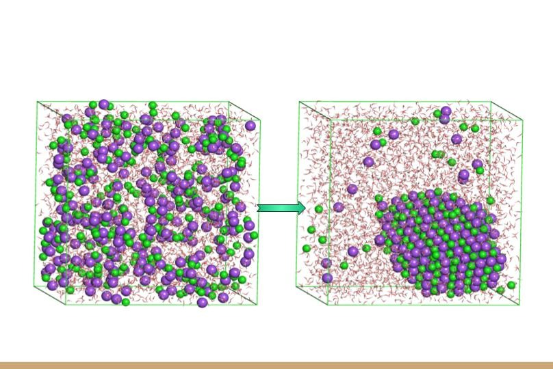
Sep 2022 - Dec 2022
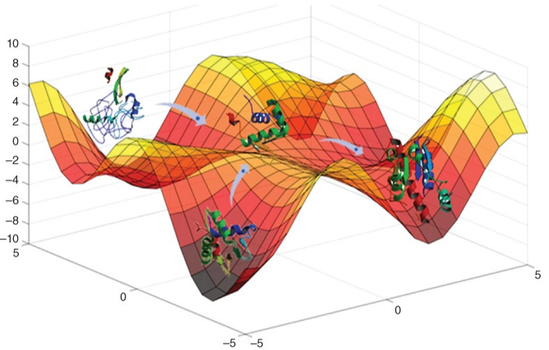
Jan 2023 - May 2023
M.Sc Project
Graduated with 86% | 3rd highest scorer in class.
81.67% (CGPA: 8.77) | Top 10 in University.
Qualified
Top 1% of students nationwide.
Qualified
Top 50 students in the state.
West Bengal, 10th Board Exams.
Maybe I love to click and love to be clicked more than anything else!
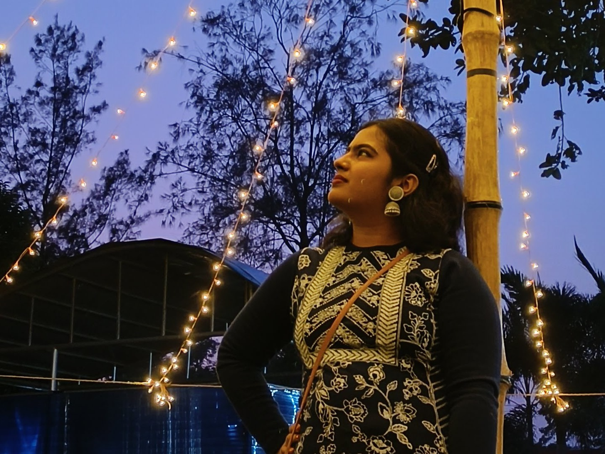
A winter evening!

That moment!
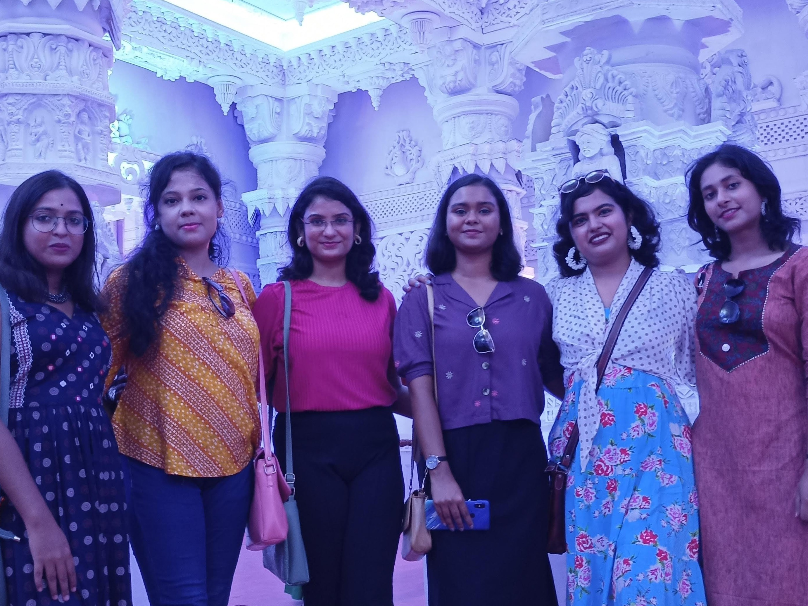
Durga Puja & Friends!
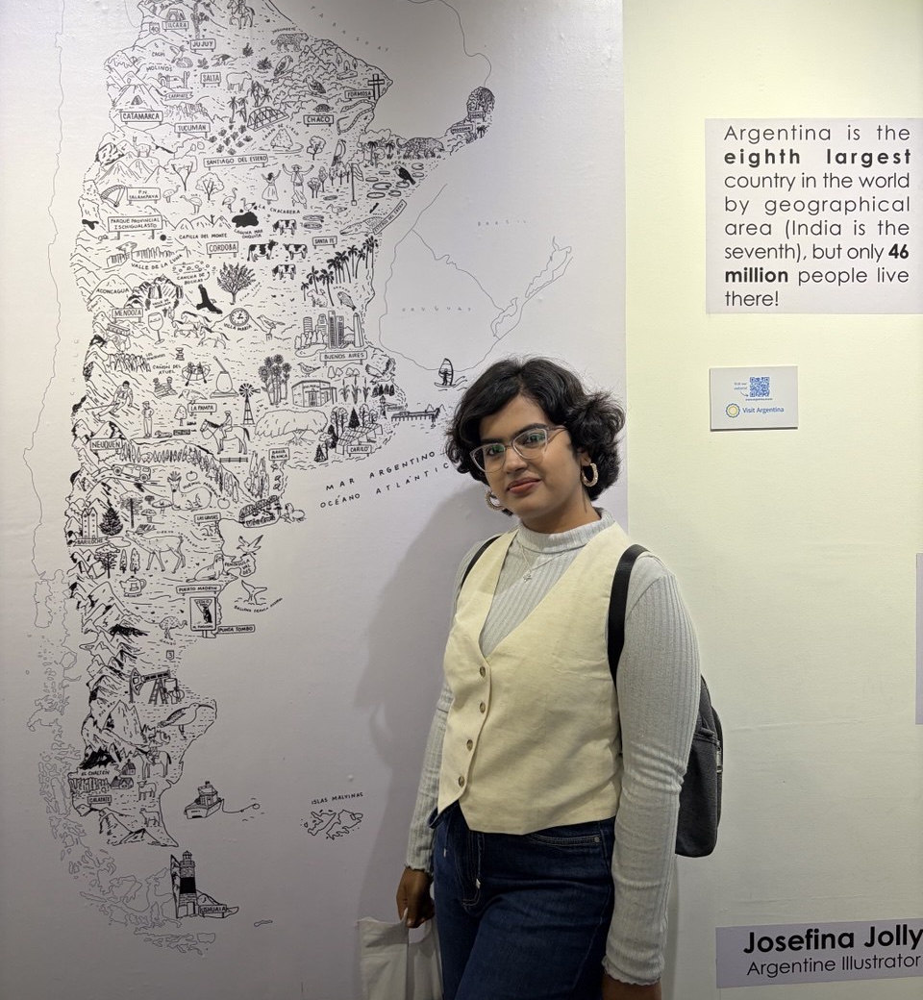
Argentina

Emergence
Curiosity!
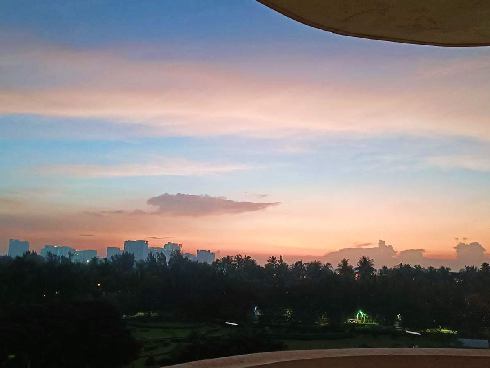
A beautiful dawn!
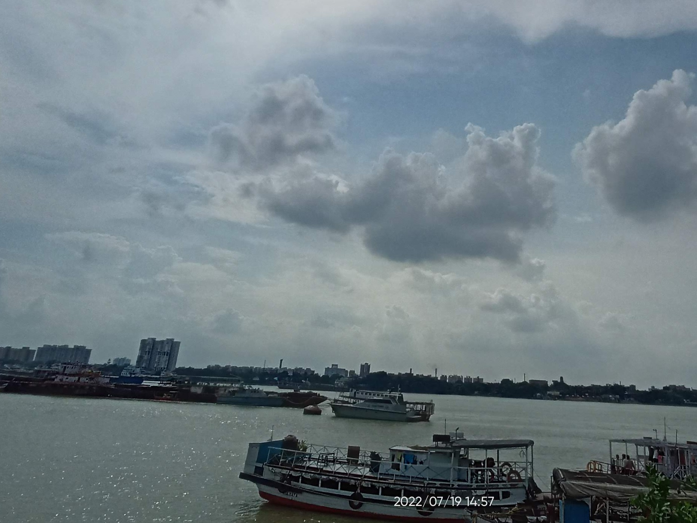
Port...
Bloom
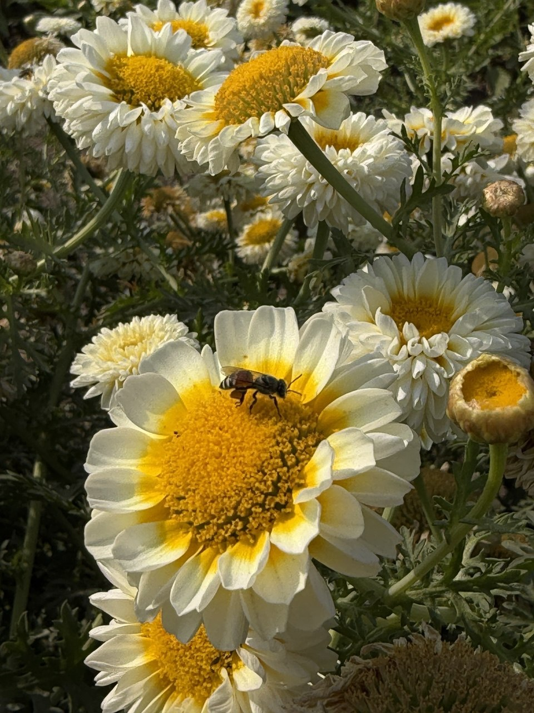
Serenity
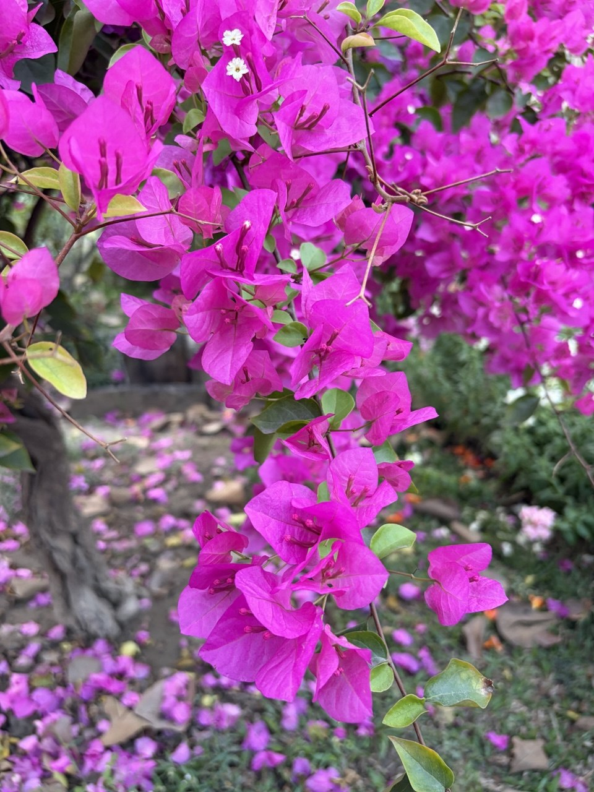
Vibrance
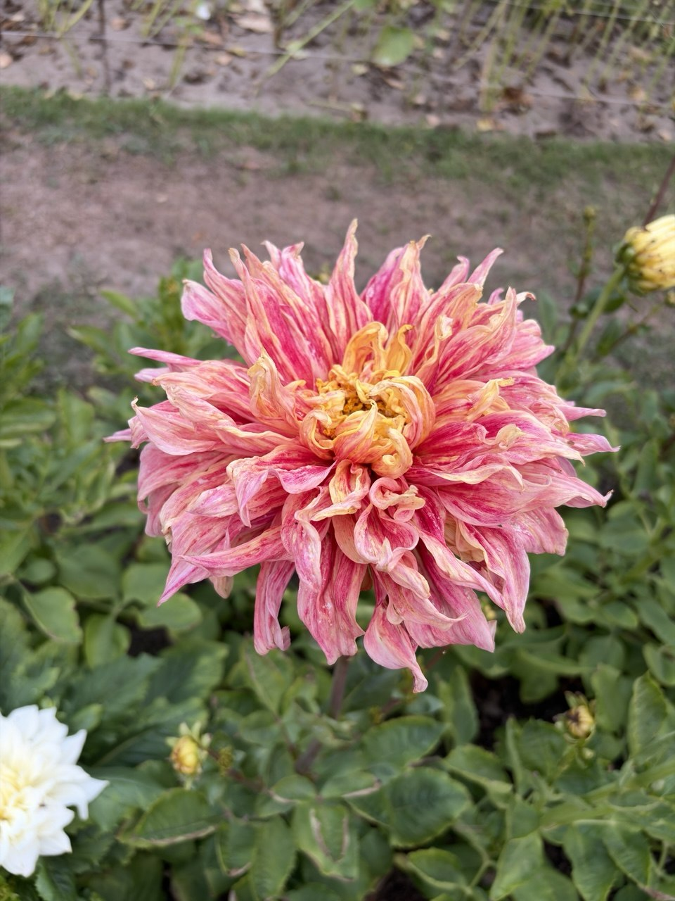
Flourish
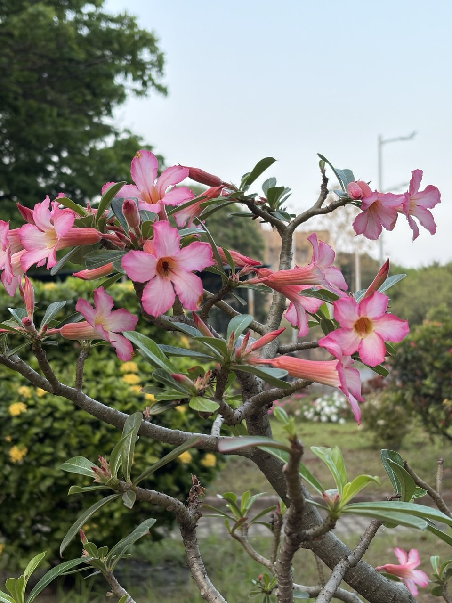
Harmony
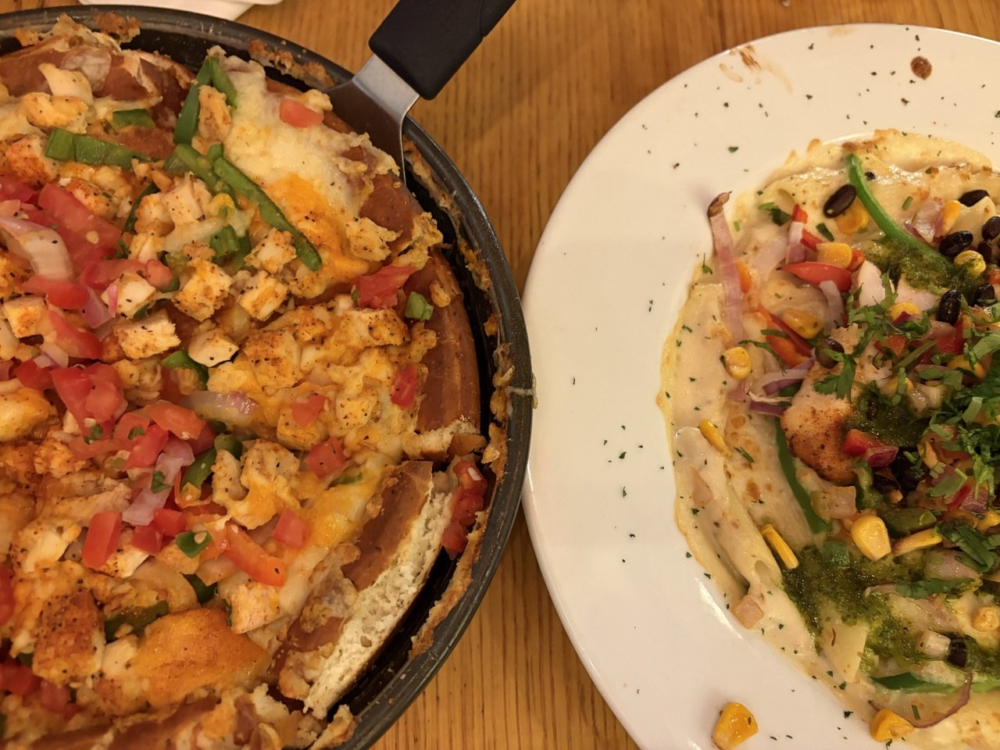
Chilli's
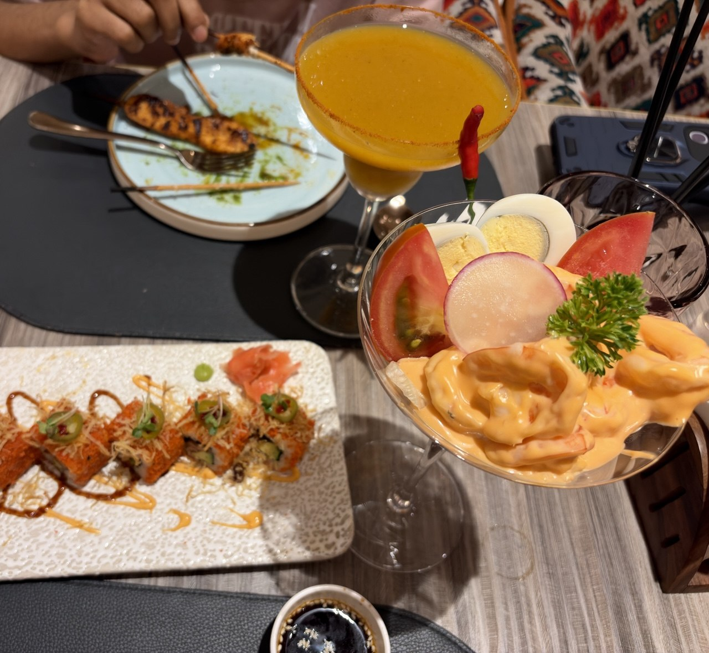
Lusscibo
I find immense joy in gazing at the stars. Participated in Astronomy Camps.
Capturing lovely moments through the lens of nature photography.
A cherished childhood activity that I eagerly resume during moments of respite.
Immersing myself in a wide array of genres, from science to detective stories.
I absolutely love watching movies and also have a deep, enduring interest in music.